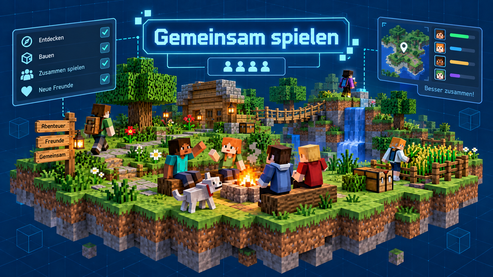

Ein Einstieg in die gemeinsame Welt
Beim gemeinsamen Spielen in Minecraft geht es nicht nur darum, Blöcke zu setzen oder Monster zu besiegen. Es geht vor allem darum, gemeinsam zu entdecken, zu bauen, zu lernen und dabei ein gutes Miteinander zu entwickeln.
Zu Beginn lernen wir die Welt und die Spielmechanik kennen. Dabei erkunden wir gemeinsam den Startbereich, tauschen Ideen aus und finden heraus, welche Interessen die einzelnen Gruppenmitglieder haben. Einige bauen gern Häuser und ganze Städte, andere interessieren sich stärker für Natur, Technik oder Rätsel.

Was wir im gemeinsamen Spielen lernen
- gemeinsam in einer Welt arbeiten und koordinieren
- Aufgaben sinnvoll aufteilen und gemeinsam planen
- Ideen verschiedener Personen respektieren und verbinden
- Schutz- und Siedlungswelten
- Technik- und Redstone-Welten
- Gebäudestrukturen und Stadtprojekte
- Welt- und Abenteuer-Umgebungen zum Erkunden
Arten von Spielwelten
In der AG spielen wir in unterschiedlichen Minecraft-Umgebungen, etwa mit:
Dadurch bleibt der Umgang mit Minecraft abwechslungsreich und wir können neue Ideen direkt ausprobieren.